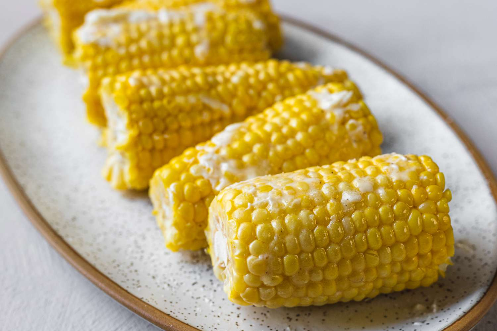

Corn on the Cob

Boiled corn on the cob is one of the most reinvented dishes you can try.
It's easy, delicious, and versatile, and this recipe is sure to keep
your tastebuds satisfied.
Boiling corn is so quick and simple that it can turn into your late night snack!
Ingredients
- 2 tablespoons of sugar
- 1 tablespoon of lemon juice
- 6 ears corn on the cob, husks and silk removed
Steps
- Fill a large pot about 3/4 full of water and bring to a boil.
Stir in sugar and lemon juice until sugar is dissolved.
- Gently place ears of corn into boiling water, cover the pot, turn
off the heat, and let corn cook in the hot water until tender, about 10 minutes.